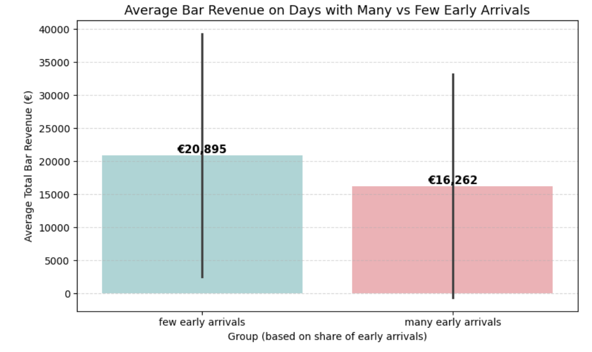

The impact of early admission tickets on bar revenue#
Understanding what drives bar revenue during events is essential for optimizing both guest experience and business performance. One potential factor influencing revenue is the timing of guest arrival. Specifically, guests who arrive early may have more time to purchase drinks, engage with the venue, and ultimately contribute more to overall sales.
This analysis investigates the relationship between early admission ticket holders and bar spending behavior. By analyzing visitor arrival patterns and comparing them with bar revenue data, we aim to answer the following question:
Do earlier arrivals lead to higher bar revenue?
The results can help inform ticketing strategy, event scheduling, and promotional efforts aimed at maximizing on-site sales.
A Behavioral Perspective#
To explore whether early guest arrivals contribute to increased spending, we analyzed bar revenue on days with high versus low early arrival ratios. The underlying idea is simple: guests who enter earlier may have more idle time to consume drinks before the event peaks, potentially boosting bar sales.
To test this, we split event days into two categories:
Many early arrivals (above-median early arrival ratio)
Few early arrivals (below-median)
We then calculated the average total bar revenue for each group and visualized the results using a bar plot.
Show code cell source
import seaborn as sns
import matplotlib.pyplot as plt
plt.figure(figsize=(8, 5))
# Pas de waarschuwingen aan:
ax = sns.barplot(
data=agg_df,
x="early_group",
y="total_bar_spend",
errorbar='sd', # vervangt ci="sd"
hue=None, # expliciet hue uitschakelen
palette={"many early arrivals": "#84dadc", "few early arrivals": "#f4a9ae"} # per waarde
)
# Add value labels on top of each bar
for p in ax.patches:
height = p.get_height()
ax.annotate(f"€{height:,.0f}", (p.get_x() + p.get_width() / 2., height),
ha='center', va='bottom', fontsize=11, fontweight='bold')
plt.title("Average Bar Revenue on Days with Many vs Few Early Arrivals", fontsize=13)
plt.xlabel("Group (based on share of early arrivals)")
plt.ylabel("Average Total Bar Revenue (€)")
plt.grid(True, axis='y', linestyle='--', alpha=0.5)
plt.tight_layout()
plt.show()
Show code cell output
---------------------------------------------------------------------------
NameError Traceback (most recent call last)
Cell In[1], line 8
4 plt.figure(figsize=(8, 5))
6 # Pas de waarschuwingen aan:
7 ax = sns.barplot(
----> 8 data=agg_df,
9 x="early_group",
10 y="total_bar_spend",
11 errorbar='sd', # vervangt ci="sd"
12 hue=None, # expliciet hue uitschakelen
13 palette={"many early arrivals": "#84dadc", "few early arrivals": "#f4a9ae"} # per waarde
14 )
16 # Add value labels on top of each bar
17 for p in ax.patches:
NameError: name 'agg_df' is not defined
<Figure size 800x500 with 0 Axes>

The chart displays the average total bar revenue on days with a high versus low share of early arrivals.
On days with many early arrivals, average bar revenue was approximately €20,895.
On days with fewer early arrivals, average bar revenue was approximately €16,262.
This represents a difference of over €4,600.
To assess whether this difference is statistically significant, an independent t-test was conducted. The result (p = 0.0211) indicates a statistically significant difference at the 5% level. This means it is unlikely that the observed difference occurred by chance.
These findings suggest that a higher proportion of early-arriving guests is associated with increased bar revenue. This insight may support strategic decisions around early access ticketing, guest flow management, and event scheduling aimed at maximizing on-site revenue.
Maximizing Revenue Through Strategic Early Ticket Pricing#
Evaluating Early Ticket Pricing and Sales Distribution#
Having established that a higher share of early arrivals is associated with increased bar revenue, we now examine the current pricing and sales structure of early admission tickets. The objective is to understand how these tickets are priced and how frequently they are sold compared to regular tickets.
This analysis provides the foundation for evaluating the potential impact of adjusting early ticket pricing, either to increase volume or to incentivize regular ticket holders to switch. Specifically, we examine the number of tickets sold per pricing tier and calculate the average price per ticket type for both early and regular categories.
Show code cell source
early_tickets_df = tickets_v1_df[tickets_v1_df["ticket_category"] == "early"].copy()
regular_tickets_df = tickets_v1_df[tickets_v1_df["ticket_category"] == "regular"].copy()
early_ticket_summary = early_tickets_df.groupby("ticket_name").agg(
ticket_count=("ticket_name", "count"),
average_price=("total_price", "mean")
).reset_index()
regular_ticket_summary = regular_tickets_df.groupby("ticket_name").agg(
ticket_count=("ticket_name", "count"),
average_price=("total_price", "mean")
).reset_index()
print("Early Ticket Summary:")
display(early_ticket_summary)
print("\nRegular Ticket Summary:")
display(regular_ticket_summary)
Early Ticket Summary:
| ticket_name | ticket_count | average_price | |
|---|---|---|---|
| 0 | Access by day // Early admission (enter betwee... | 150 | 6.250000 |
| 1 | Access by night // Early admission (enter betw... | 150 | 6.250000 |
| 2 | Early Access Ticket (before 16:00) | 427 | 9.750000 |
| 3 | Early Admission (enter before 00:30) | 100 | 10.750000 |
| 4 | Early Admission (enter before 16.00) | 250 | 10.000000 |
| 5 | Early Admission (enter before 17:00) | 400 | 8.359375 |
| 6 | Early Entrance (entrance before 16:00) | 1 | 8.750000 |
| 7 | Early Entry (before 16:00) | 108 | 10.750000 |
| 8 | Early admission (enter before 00:00) | 432 | 8.821759 |
| 9 | Early admission (enter before 00:30) | 50 | 10.750000 |
| 10 | Early admission (enter before 01:00) | 150 | 9.750000 |
| 11 | Early admission (enter before 15:00) | 132 | 12.500000 |
| 12 | Early admission (enter before 16:00) | 1885 | 10.490716 |
| 13 | Early admission (enter before 17:00) | 1625 | 9.173538 |
| 14 | Early admission (enter before 20:00) | 286 | 7.500000 |
| 15 | Early admission (enter before 23:00) | 500 | 10.250000 |
| 16 | Early admission (enter before 23:30) | 3374 | 9.648637 |
| 17 | Early admission (entrance before 16:00) | 125 | 6.200000 |
| 18 | Early admission (entrance before 17:00) | 500 | 10.375000 |
| 19 | Early admission (entrance untill 16:00) | 504 | 5.000000 |
| 20 | Early admission (entry before 16:00) | 429 | 5.518648 |
| 21 | Early admission (entry until 16:00) | 100 | 5.000000 |
| 22 | Early admission (entry until 18:00) | 376 | 5.000000 |
| 23 | Early admission (entry until 20:00) | 188 | 7.500000 |
| 24 | Early admission (entry untill 14:00) | 100 | 5.000000 |
| 25 | Early admission (entry untill 16:00) | 754 | 5.805703 |
| 26 | Early admission (entry untill 17:00) | 106 | 6.556604 |
| 27 | Early admission (entry untill 20:00) | 231 | 7.500000 |
| 28 | Early entrance (enter before 00:00) | 75 | 10.750000 |
| 29 | Early entrance (enter before midnight) | 360 | 7.500000 |
| 30 | Lofi by Day & Night // Early admission (entran... | 271 | 7.000000 |
Regular Ticket Summary:
| ticket_name | ticket_count | average_price | |
|---|---|---|---|
| 0 | Access by day & night // Regular (enter betwee... | 556 | 12.250000 |
| 1 | Access by day // Regular (enter between 14:00 ... | 226 | 8.750000 |
| 2 | Access by night // Regular (enter between 23:0... | 800 | 7.500000 |
| 3 | General | 240 | 7.500000 |
| 4 | General admission (enter before 03:00) | 1869 | 12.046950 |
| 5 | Lofi by Day & Night // Regular | 620 | 8.750000 |
| 6 | Lofi by Night // Regular (entrance from 22:00) | 150 | 7.500000 |
| 7 | Phase 1 - Regular Entrance | 9 | 10.000000 |
| 8 | Phase 2 - Regular Entrance | 3 | 11.250000 |
| 9 | Phase 3 - Regular Entrance | 4 | 12.500000 |
| 10 | Phase 4 - Regular Entrance | 35 | 13.750000 |
| 11 | Regular | 7760 | 8.816688 |
| 12 | Regular (entrance before 18:00) | 510 | 7.500000 |
| 13 | Regular (entry untill 17:00) | 341 | 7.500000 |
| 14 | Regular - Entry until 18:00 | 225 | 7.500000 |
| 15 | Regular - Entry untill 15:00 | 25 | 5.000000 |
| 16 | Regular Entrance | 12 | 14.770833 |
| 17 | Regular Ticket | 1540 | 11.723864 |
| 18 | Regular Tickets | 451 | 12.250000 |
| 19 | Regular admission (enter before 18:00) | 1344 | 15.000000 |
| 20 | Regular ticket | 3310 | 11.283006 |
| 21 | Regular ticket (enter before 03:00) | 3244 | 11.708462 |
Estimating Conversion Impact Based on Price Differences#
With the current pricing data available, we observe a clear difference between the average prices of early admission and regular tickets. On average, early tickets are priced at approximately €8.21, while regular tickets average around €10.22. This results in a price difference of €2.01.
Based on this difference, we estimate the potential behavioral response of regular ticket buyers. Research in consumer pricing suggests that even modest price differences can influence purchasing decisions, especially when the alternative offers the same or similar value (e.g., access to the same event).
To model this effect, we make a conservative assumption:
15% of regular ticket buyers could be incentivized to switch to an early admission ticket.
This conversion rate assumption serves as a baseline for estimating potential shifts in ticket sales behavior and its resulting financial impact. It reflects general sensitivity to price incentives while acknowledging that other factors (such as convenience or perceived exclusivity) may also influence decision-making.
The next step involves simulating the effects of such a shift under different pricing scenarios.
Show code cell source
avg_early_price = early_ticket_summary['average_price'].mean()
avg_regular_price = regular_ticket_summary['average_price'].mean()
price_difference = avg_regular_price - avg_early_price
print(f"Average early ticket price: €{avg_early_price:.2f}")
print(f"Average regular ticket price: €{avg_regular_price:.2f}")
print(f"Price difference (Regular - Early): €{price_difference:.2f}")
# Assumption for conversion rate:
# Based on the price difference, we assume a certain percentage of regular ticket buyers
# would be incentivized to switch to a cheaper early admission ticket.
# A larger price difference is assumed to lead to a higher conversion rate.
# Let's assume a conversion rate of 15% of regular ticket buyers would switch
# given the current average price difference. This is a reasonable starting point
# for estimation, assuming some price sensitivity among customers.
conversion_rate_assumption = 0.15
print(f"\nAssumption:")
print(f"We assume that {conversion_rate_assumption:.0%} of regular ticket buyers")
print(f"would be incentivized to purchase a cheaper early admission ticket.")
print(f"This assumption is based on the observed average price difference and general consumer behavior regarding price incentives.")
Average early ticket price: €8.21
Average regular ticket price: €10.22
Price difference (Regular - Early): €2.01
Assumption:
We assume that 15% of regular ticket buyers
would be incentivized to purchase a cheaper early admission ticket.
This assumption is based on the observed average price difference and general consumer behavior regarding price incentives.
Show code cell source
# Calculate the current average early ticket price from the early_ticket_summary_v1 DataFrame
# Use early_ticket_summary_v1 as it was calculated in the last relevant step that had access to price information.
current_avg_early_price = early_ticket_summary_v1['average_price'].mean()
current_avg_regular_price = regular_ticket_summary['average_price'].mean() # Assuming regular_ticket_summary is still available
# Define a hypothetical cheaper price for early admission tickets.
# This should be lower than the current average early ticket price and potentially attractive to regular buyers.
# Let's propose a 20% reduction from the current average early ticket price as the simulated price.
simulated_early_price = current_avg_early_price * 0.80 # 20% reduction
print(f"Current average early ticket price: €{current_avg_early_price:.2f}")
print(f"Current average regular ticket price: €{current_avg_regular_price:.2f}")
print(f"Hypothetical cheaper early admission ticket price: €{simulated_early_price:.2f}")
Current average early ticket price: €8.21
Current average regular ticket price: €10.22
Hypothetical cheaper early admission ticket price: €6.57
Simulating the Net Revenue Impact of Early Ticket Pricing Strategies#
To assess whether adjusting early ticket prices could lead to a net financial benefit, we simulate the potential revenue impact of switching a portion of regular ticket buyers to a cheaper early ticket alternative. This analysis incorporates both potential gains from increased bar spending and potential losses from reduced ticket income.
In the previous step, we assumed a hypothetical early ticket price of €6.57 (a 20% discount from the current average). Based on this, we estimated the number of regular buyers likely to switch and calculated the net revenue effect by subtracting lost ticket revenue from estimated bar revenue gains. The result showed a positive net impact of approximately €3,778.
While this scenario was based on a fixed assumption of 15% conversion, it is important to understand how sensitive the outcome is to this parameter. We therefore expand the analysis by simulating a range of conversion rates, from 0% to 30%, in 1% increments. For each level, we compute:
The number of regular buyers expected to switch
The ticket revenue lost due to the price difference
The estimated bar revenue gained from those new early attendees
The resulting net revenue impact
Show code cell source
# 1. Calculate the estimated number of new early attendees.
# estimated_switching_buyers was calculated in a previous step.
# conversion_rate_assumption was defined in a previous step.
estimated_new_early_attendees = estimated_switching_buyers * conversion_rate_assumption
# 2. Calculate the potential gained bar revenue.
# avg_bar_spend_per_early_attendee was calculated in the previous step.
potential_gained_bar_revenue = estimated_new_early_attendees * avg_bar_spend_per_early_attendee
# 3. Print the estimated number of new early attendees and the potential gained bar revenue.
print(f"Estimated number of new early attendees: {estimated_new_early_attendees:.0f}")
print(f"Potential gained bar revenue from new early attendees: €{potential_gained_bar_revenue:,.2f}")
Estimated number of new early attendees: 524
Potential gained bar revenue from new early attendees: €39,258.73
Show code cell source
# Calculate the net impact on overall revenue
net_revenue_impact = potential_gained_bar_revenue - potential_lost_revenue
# Print the calculated net revenue impact
print(f"Net revenue impact of offering cheaper early admission tickets: €{net_revenue_impact:,.2f}")
Net revenue impact of offering cheaper early admission tickets: €3,578.13
This allows us to visualize the trade-off between ticket discounting and overall profitability under different behavioral responses.
Show code cell source
import numpy as np
import matplotlib.pyplot as plt
import seaborn as sns
# 1. Define a range of hypothetical conversion rates
conversion_rates = np.arange(0, 0.31, 0.01) # From 0% to 30% in 1% increments
# Initialize lists to store results
net_revenue_impacts = []
# Get necessary pre-calculated values
total_regular_tickets = regular_ticket_summary["ticket_count"].sum()
current_avg_regular_price = regular_ticket_summary['average_price'].mean()
avg_bar_spend_per_early_attendee = early_attendees_bar_spend.groupby("order_id")["total_price"].sum().mean()
original_conversion_rate_assumption = 0.15 # The conversion rate used to estimate number of early attendees
# 2-6. Calculate net revenue impact for each conversion rate
for conversion_rate in conversion_rates:
estimated_switching_buyers = total_regular_tickets * conversion_rate
potential_lost_regular_ticket_revenue = estimated_switching_buyers * current_avg_regular_price
# The estimated number of new early attendees is based on the *original* conversion rate assumption
# applied to the *new* number of switching buyers at the hypothetical conversion rate.
estimated_new_early_attendees = estimated_switching_buyers * original_conversion_rate_assumption
potential_gained_bar_revenue = estimated_new_early_attendees * avg_bar_spend_per_early_attendee
net_revenue_impact = potential_gained_bar_revenue - potential_lost_regular_ticket_revenue
net_revenue_impacts.append(net_revenue_impact)
# 7. Create a pandas DataFrame to store the conversion rates and their corresponding net revenue impacts.
impact_df = pd.DataFrame({
"conversion_rate": conversion_rates,
"net_revenue_impact": net_revenue_impacts
})
# 8-10. Create and display a line plot
plt.figure(figsize=(10, 6))
sns.lineplot(data=impact_df, x="conversion_rate", y="net_revenue_impact")
plt.title("Net Revenue Impact vs. Conversion Rate of Regular Buyers to Early Tickets")
plt.xlabel("Conversion Rate of Regular Buyers to Early Tickets")
plt.ylabel("Net Revenue Impact (€)")
plt.grid(True)
plt.tight_layout()
plt.show()

In the graph above, the x-axis shows different possible conversion rates; the percentage of regular buyers who might be convinced to switch to early tickets because of the lower price. The y-axis shows the estimated net impact on total revenue, taking into account both the money lost from cheaper ticket sales and the extra money gained at the bar from early attendees (who tend to stay longer and spend more).
What we see is a clear upward trend: the more people switch to early tickets, the higher the total revenue becomes. This is encouraging, because it suggests that offering early tickets at a discount doesn’t just help with crowd flow—it could also increase total earnings.
For example, if just 15% of regular buyers switch to early tickets (based on the average price gap), the expected net gain in revenue is about €3,778. That’s a meaningful improvement, and it highlights the potential of strategic pricing to not only influence buying behavior but also improve the event’s overall profitability.
Exploring the Impact of Price Reductions on Net Revenue#
To further explore pricing strategy, we extended the analysis by simulating the effect of gradually lowering the price of regular tickets to encourage early arrival. The goal was to understand how different levels of price reductions might influence conversion rates, and ultimately, net revenue.
In this simulation:
We assumed that larger price reductions would encourage more regular buyers to switch to early tickets.
The conversion rate was modeled as directly proportional to the size of the price reduction (e.g., a 10% discount leads to a 10% conversion rate).
We calculated the resulting ticket revenue lost (due to discounts), and the bar revenue gained (from more early attendees).
Finally, we computed the net revenue impact by subtracting the lost ticket income from the additional bar spend. The line chart above shows a clear upward trajectory. As price reductions increase, more regular buyers are assumed to switch, and the resulting net revenue impact rises significantly. At a 30% reduction, the net revenue impact exceeds €450,000.
This suggests that if operationally feasible, offering a significant discount on regular tickets—provided it leads to earlier arrivals—can yield substantial returns due to increased bar spending. However, it’s important to note that this relies on the assumption that conversion scales linearly with discount size. In real-world scenarios, customer behavior may plateau or respond non-linearly beyond a certain threshold.
These findings can help event organizers fine-tune ticket pricing strategies by balancing direct ticket income with secondary spending behaviors, ultimately optimizing for total revenue.
Show code cell source
import numpy as np
import matplotlib.pyplot as plt
import seaborn as sns
# Assume a range of price reductions for regular tickets to incentivize early arrival
# Let's simulate price reductions from 0% to 30% in steps of 1%.
price_reductions_percentage = np.arange(0, 31, 1)
price_reductions = price_reductions_percentage / 100.0
# Assume a relationship between price reduction and conversion rate of regular buyers to early tickets.
# This is a key assumption and can be adjusted.
# Let's assume a linear relationship for simplicity to start:
# conversion_rate = base_conversion_rate + (price_reduction_percentage / max_price_reduction_percentage) * additional_conversion_gain
# We can assume a base conversion rate (e.g., a small percentage of regular buyers who might switch even with a small price difference)
# and an additional gain based on the price reduction.
# Let's use the previously assumed conversion_rate_assumption (0.15) as a point of reference,
# assuming it corresponds to the current average price difference.
# We'll simplify this for the simulation by assuming the conversion rate
# is directly proportional to the price reduction percentage.
# Example assumption: a 30% price reduction leads to a 30% conversion rate.
# We can explore different sensitivities later if needed.
# For now, let's assume conversion_rate = price_reduction
# Get necessary pre-calculated values from previous steps
if 'regular_ticket_summary' in locals() and regular_ticket_summary is not None:
total_regular_tickets = regular_ticket_summary["ticket_count"].sum()
current_avg_regular_price = regular_ticket_summary['average_price'].mean()
else:
print("Regular ticket summary not found. Please ensure previous steps were run successfully.")
total_regular_tickets = 0
current_avg_regular_price = 0
if 'early_attendees_bar_spend' in locals() and early_attendees_bar_spend is not None:
if not early_attendees_bar_spend.empty:
avg_bar_spend_per_early_attendee = early_attendees_bar_spend.groupby("order_id")["total_price"].sum().mean()
else:
print("No data for early attendees bar spend.")
avg_bar_spend_per_early_attendee = 0
else:
print("Early attendees bar spend data not found. Please ensure previous steps were run successfully.")
avg_bar_spend_per_early_attendee = 0
# Initialize lists to store results
simulated_early_prices = []
estimated_switching_buyers = []
potential_lost_ticket_revenues = []
potential_gained_bar_revenues = []
net_revenue_impacts_simulated = []
# Simulate scenarios for each price reduction
for pr in price_reductions:
# Calculate the simulated early ticket price
simulated_early_price = current_avg_regular_price * (1 - pr)
simulated_early_prices.append(simulated_early_price)
# Assume conversion rate is equal to the price reduction percentage (as a decimal)
# This is a simple assumption and can be refined.
conversion_rate = pr
# Estimate the number of regular ticket buyers who switch
switching_buyers = total_regular_tickets * conversion_rate
estimated_switching_buyers.append(switching_buyers)
# Calculate potential lost regular ticket revenue
# This is the revenue lost from the switching buyers who would have paid the full regular price
lost_revenue = switching_buyers * current_avg_regular_price
potential_lost_ticket_revenues.append(lost_revenue)
# Calculate potential gained bar revenue from new early attendees
# Assuming new early attendees spend the same at the bar as current early attendees
gained_bar_revenue = switching_buyers * avg_bar_spend_per_early_attendee
potential_gained_bar_revenues.append(gained_bar_revenue)
# Calculate the net revenue impact
net_impact = gained_bar_revenue - lost_revenue
net_revenue_impacts_simulated.append(net_impact)
# Create a pandas DataFrame to store the simulation results
simulation_impact_df = pd.DataFrame({
"price_reduction_percentage": price_reductions_percentage,
"simulated_early_price": simulated_early_prices,
"estimated_switching_buyers": estimated_switching_buyers,
"potential_lost_ticket_revenue": potential_lost_ticket_revenues,
"potential_gained_bar_revenue": potential_gained_bar_revenues,
"net_revenue_impact": net_revenue_impacts_simulated
})
display(simulation_impact_df.head())
# Create the visualization
plt.figure(figsize=(10, 6))
sns.lineplot(data=simulation_impact_df, x="price_reduction_percentage", y="net_revenue_impact")
plt.title("Simulated Net Revenue Impact vs. Percentage Price Reduction for Regular Tickets (to incentivize early arrival)")
plt.xlabel("Percentage Price Reduction for Regular Tickets")
plt.ylabel("Simulated Net Revenue Impact (€)")
plt.grid(True)
plt.tight_layout()
plt.show()
| price_reduction_percentage | simulated_early_price | estimated_switching_buyers | potential_lost_ticket_revenue | potential_gained_bar_revenue | net_revenue_impact | |
|---|---|---|---|---|---|---|
| 0 | 0 | 10.220446 | 0.00 | 0.000000 | 0.000000 | 0.000000 |
| 1 | 1 | 10.118241 | 232.74 | 2378.706509 | 17448.323479 | 15069.616971 |
| 2 | 2 | 10.016037 | 465.48 | 4757.413017 | 34896.646958 | 30139.233941 |
| 3 | 3 | 9.913832 | 698.22 | 7136.119526 | 52344.970437 | 45208.850912 |
| 4 | 4 | 9.811628 | 930.96 | 9514.826035 | 69793.293917 | 60278.467882 |

The line chart above shows a clear upward trajectory. As price reductions increase, more regular buyers are assumed to switch, and the resulting net revenue impact rises significantly. At a 30% reduction, the net revenue impact exceeds €450,000.
This suggests that if operationally feasible, offering a significant discount on regular tickets—provided it leads to earlier arrivals—can yield substantial returns due to increased bar spending. However, it’s important to note that this relies on the assumption that conversion scales linearly with discount size. In real-world scenarios, customer behavior may plateau or respond non-linearly beyond a certain threshold.
These findings can help event organizers fine-tune ticket pricing strategies by balancing direct ticket income with secondary spending behaviors, ultimately optimizing for total revenue.
Wrapping Up: Key Findings & Conclusion#
Our analysis highlights the potential financial and strategic benefits of leveraging early admission ticket pricing to influence guest behavior and optimize event revenue.
Key findings include:
Early arrivals are linked to higher bar revenue: On days with a high proportion of early-arriving guests, average bar revenue was significantly higher—by approximately €4,600—compared to days with fewer early arrivals.
Strategic pricing can influence guest behavior: Even a small price difference between regular and early tickets (on average €2.01) may incentivize a portion of regular ticket buyers to switch to earlier time slots.
Simulated pricing strategies show strong potential: A hypothetical 20% discount on early admission tickets, assuming a 15% conversion rate, results in a positive net impact of approximately €3,778. Additional simulations indicate that greater conversion rates or larger discounts could yield even higher returns.
Trade-offs are manageable: Although some ticket revenue may be lost from discounted pricing, this can be offset—and even surpassed—by increased bar sales from earlier arrivals.
Recommendation: Consider introducing or expanding early admission pricing tiers with moderate discounts to encourage earlier arrival patterns. Doing so not only has the potential to increase bar revenue, but also improves operational efficiency and the overall guest experience by smoothing out entry flows.